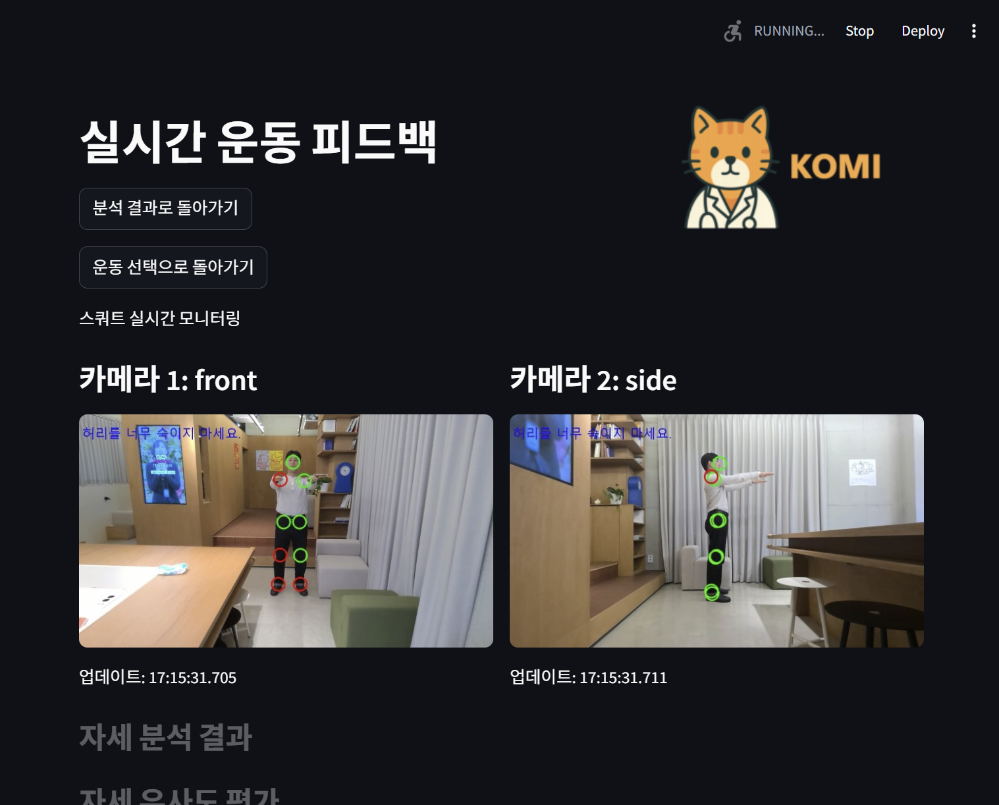
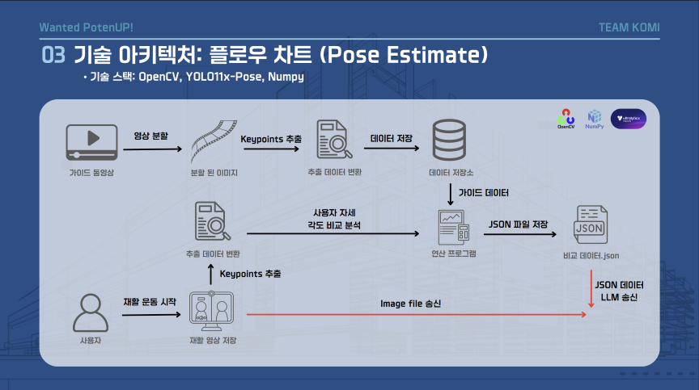
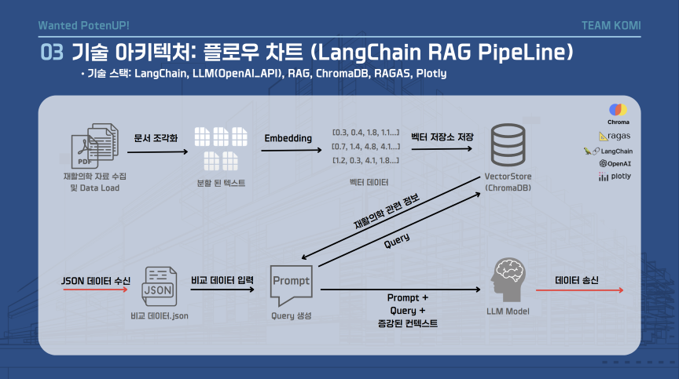
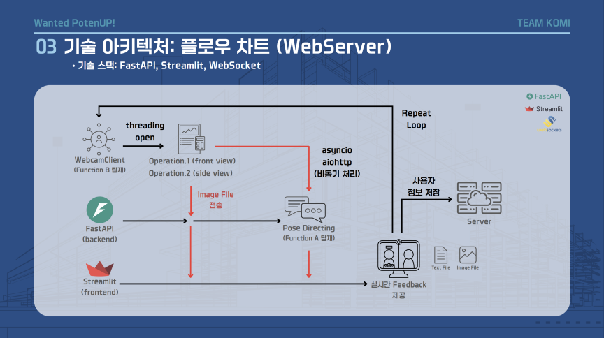
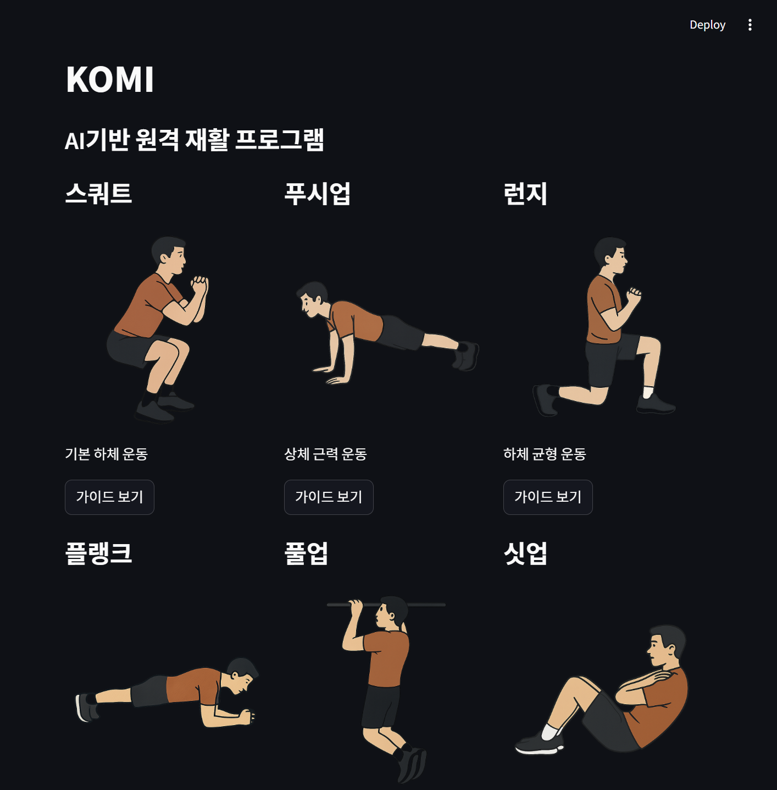
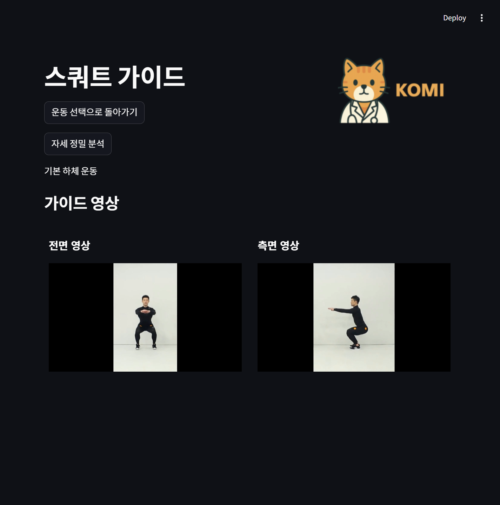
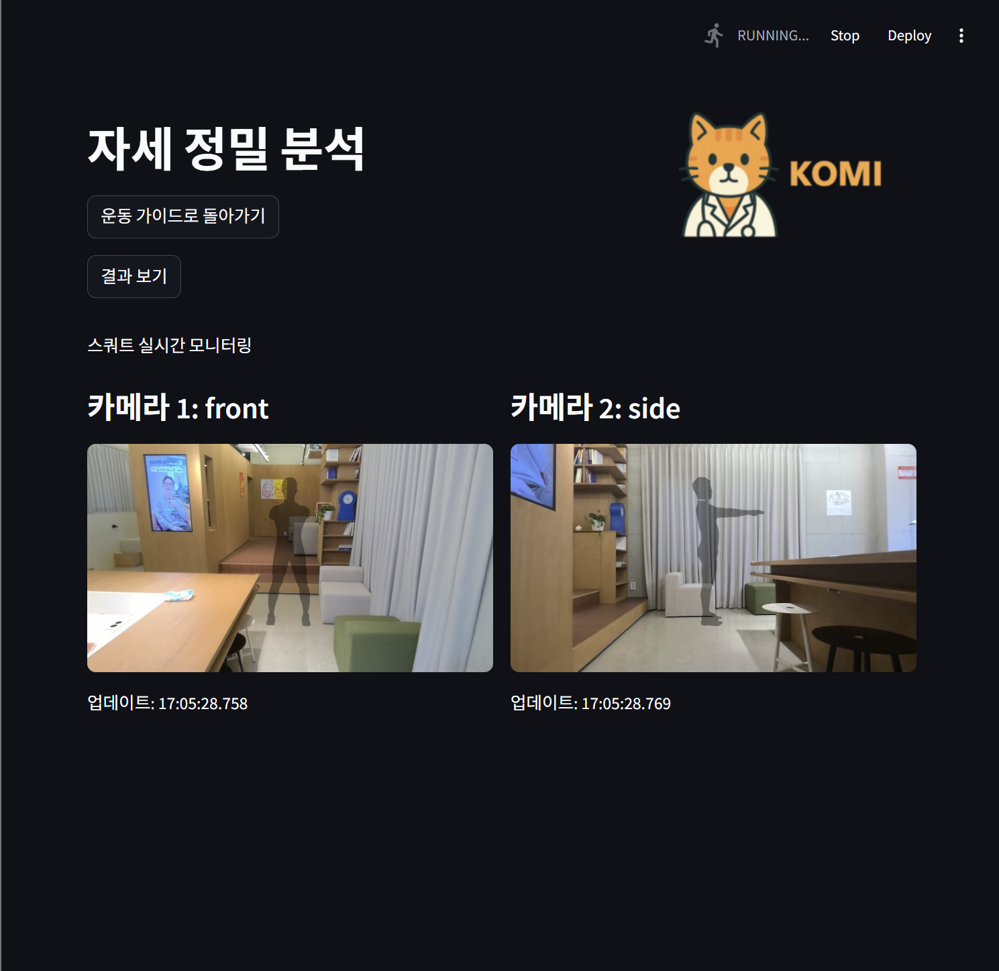
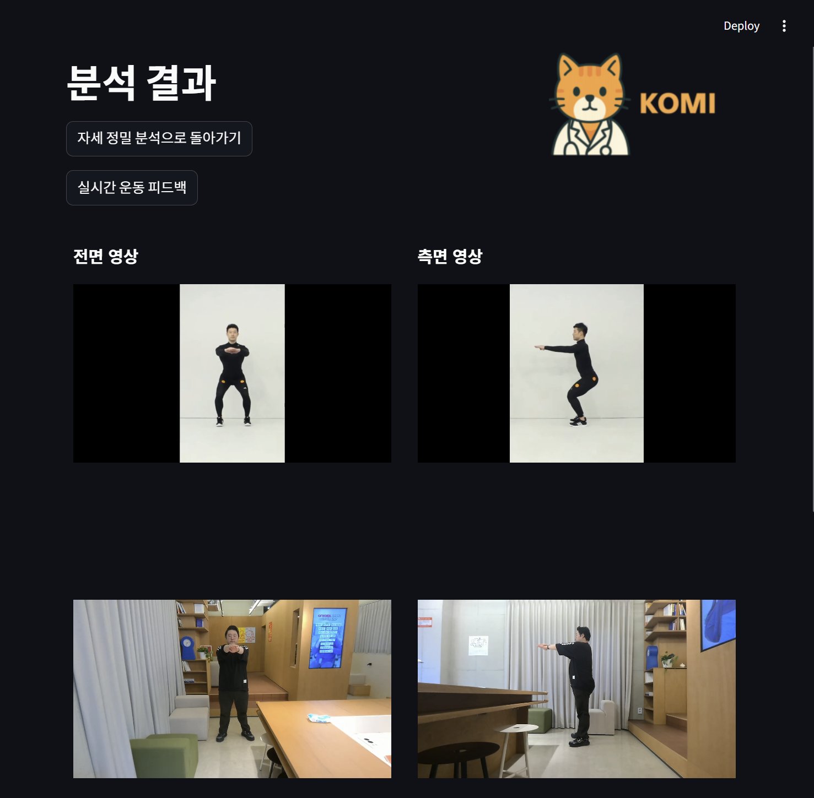
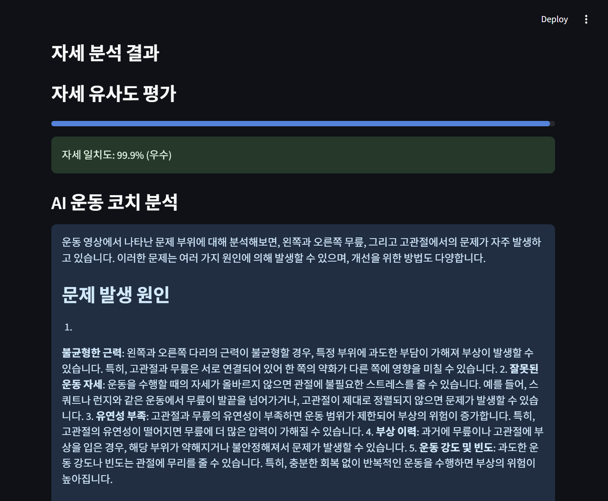
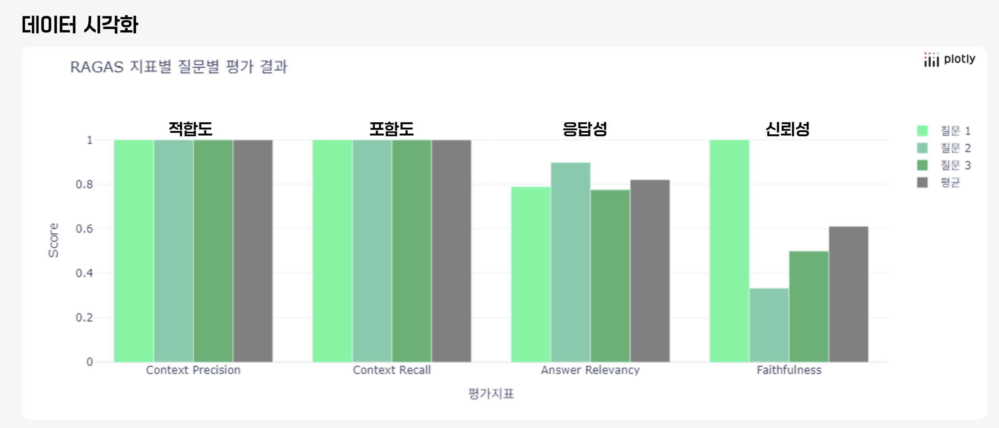

KOMI - AI 기반 원격 재활 진료 서비스
Problem
Social Impact
고령화와 만성질환 증가로 재활 수요가 급증하고 있지만, 거동이 불편한 노약자나 농어촌, 도서산간, 등대지기, 군부대 등 의료 시설이 부족한 지역의 사용자들은 재활 치료를 위한 병원 방문이 어렵습니다. 특히 물리치료사의 실시간 피드백 없이는 올바른 자세로 운동하기 힘든 상황입니다.
Economic Impact
건강보험 재정 고갈 위기가 심화되는 상황에서, 치료 중심이 아닌 예방적 건강관리 모델의 필요성이 대두되고 있습니다. 저비용·고효율의 재활 솔루션으로 의료비 부담을 줄이고 건보 재정 건전성에 기여할 수 있는 방안이 필요합니다.
Technical Challenge
- Real-time Streaming: WebSocket과 멀티스레딩을 활용한 영상 동기화 및 지연 시간 최소화가 필요합니다.
- RAG Validation: LLM이 생성한 재활 피드백의 환각(Hallucination) 현상을 방지하고, 의료적 신뢰성을 확보하기 위한 객관적 검증 체계가 필요합니다.
Solution
What we built
- YOLO11 기반 Pose Estimation Engine (실시간 자세 감지)
- 자세 평가 데이터셋 및 알고리즘 (Reference Pose 비교)
- LangChain 기반 RAG 시스템 (의료 문헌 검색 + 피드백 생성)
- WebSocket 기반 Real-time Communication (멀티캠 동기화)
- RAGAS 평가 프레임워크 (RAG 품질 검증)
Core Value
- Core Concept: 멀티 웹캠을 통해 실시간으로 사용자의 움직임을 분석하고, AI가 맞춤형 운동 피드백을 제공하는 원격 재활 진료 서비스. YOLO11 기반 포즈 감지와 LLM 기반 피드백 생성을 결합하여, 언제 어디서나 맞춤형 재활 가이드 제공
- Dual-View Analysis: 전면과 측면 카메라를 동시에 활용하여 3차원적인 자세 분석 수행. 단일 시점에서 놓치기 쉬운 깊이 정보와 관절 각도를 정밀하게 추출하여 분석 정확도 향상
- Evidence-based Feedback: VectorDB에 의료 논문 및 전문 재활 문헌을 저장하여, RAG 파이프라인을 통해 의학적 근거를 갖춘 맞춤형 교정 피드백 제공
주요 성과
- RAGAS Context Precision — 1.0 (100%)
- RAGAS Context Recall — 1.0 (100%)
- RAGAS Answer Relevancy — 0.82 (82%)
- Dual-View 실시간 분석 — 전면+측면 멀티캠 WebSocket 동기화 구현
- YOLO11 + LangChain RAG — 포즈 감지와 의료 문헌 기반 피드백 통합 파이프라인
System Architecture
 1. 전체 시스템 워크플로우: 사용자 입력부터 피드백 생성까지
1. 전체 시스템 워크플로우: 사용자 입력부터 피드백 생성까지

2. Pose-Estimator: YOLO11 기반 실시간 포즈 감지 시스템
3. LangChain 기반 RAG Pipeline: OpenAI Embedding + ChromaDB
4. Multi-Modal WebSocket: 2개 카메라 동기화 실시간 스트리밍Service Flow
정밀 분석 모드
운동 선택 → 가이드 영상 학습 → 영상 녹화 → 프레임 추출 → YOLO11 포즈 감지 → 기준 자세 비교 → 관절별 정확도 산출 → LLM 피드백 생성 → 결과 시각화
실시간 분석 모드
운동 선택 → 웹캠 연결 → Base64 인코딩 → WebSocket 실시간 전송 → 포즈 감지 → 정확도 스코어 계산 → 즉시 피드백 표시

1. 메인 화면 - 운동 선택
2. 운동 가이드 - 올바른 자세 학습
3. 정밀 분석 - Segmentaion-based 영상 녹화 및 자세 분석
4. 분석 결과 - 관절별 정확도 표시
5. 분석 결과 - LLM 기반 개선 제안What I Built
1. Pose Estimation Engine
YoloPoseModel 클래스 기반 실시간 포즈 감지 엔진을 구축했습니다.
- YOLO11n 모델을 활용한 실시간 자세 감지 엔진 구축
- 17개 COCO Keypoints 추출: nose, eyes, ears, shoulders, elbows, wrists, hips, knees, ankles
- OpenCV 기반 프레임 처리 및 키포인트 시각화 구현
conf_threshold=0.5이상 신뢰도 관절만 필터링SKELETON배열 기반 관절 연결선 시각화 (팔, 다리, 몸통)- Base64 인코딩 이미지 ↔ NumPy 배열 변환 처리
2. 자세 평가 데이터셋 및 알고리즘
정확한 자세 비교를 위한 데이터셋과 PoseAnalyzer 클래스 기반 평가 알고리즘을 개발했습니다.
- 정확한 자세(Reference Pose) 데이터 수집 및 정제
- 흐트러진 자세별 원인 분석 및 문제점 매핑
- 자세-원인-해결책 3단계 데이터 구조 설계
- 벡터 내적을 활용한 관절 각도 계산 (
_calculate_angle) - L2 거리 + 코사인 유사도 기반 유사도 평가
- 참조 자세 대비 15도 이상 차이 시 오류 관절로 분류
3. LangChain 기반 RAG 시스템
LangChain + ChromaDB 기반 의료 문헌 검색 및 피드백 생성 시스템을 구축했습니다.
OpenAIEmbeddings()로 의료 PDF 문서 벡터화ChromaDBVector Store 구축 및 검색 파이프라인 구현retriever.as_retriever(search_type="similarity", k=5)유사 문서 검색RunnableMap→PromptTemplate→ChatOpenAI(gpt-4o-mini)체인 구성- 관절별 오류 통계를 자연어 프롬프트로 변환 (
generate_summary_prompt) - 의료 전문가 관점의 프롬프트 엔지니어링
4. RAGAS 평가 프레임워크 적용
RAG 시스템의 품질을 객관적으로 검증하기 위해 RAGAS 프레임워크를 도입했습니다.
- "검색이 정확한가?"
- "답변이 질문에 맞는가?"
- "답변이 근거에 충실한가?"
위와 같은 핵심 질문에 대한 정량적 지표를 확보하여, 단순 체감이 아닌 데이터 기반의 품질 관리 체계를 구축했습니다.
성과 및 회고
주요 성과
- YOLO11 + LangChain 통합 재활 서비스 구현
- 정밀 분석 / 실시간 분석 듀얼 모드 개발
- WebSocket 기반 멀티캠 동기화 구현
- RAGAS 평가 지표를 통한 RAG 성능 검증
RAGAS 평가 결과

- Context Precision: 1.0 (100%) - 검색된 문맥이 질문과 높은 관련성 확보
- Context Recall: 1.0 (100%) - 필요한 정보가 누락 없이 검색됨
- Answer Relevancy: 0.82 (82%) - 생성된 답변이 질문에 적절히 대응
- Faithfulness: 0.61 (61%) - 문맥 충실도는 개선 필요 영역으로 식별, 프롬프트 엔지니어링 고도화 방향 도출
시행착오
이번 프로젝트에서 가장 어려웠던 부분은 의료 데이터 수집이었습니다.
의료 데이터는 개인정보 보호 이슈가 크고, AI-Hub에 공개된 데이터 역시 일정 비용이 필요해 초기 기획을 그대로 유지하기에는 현실적인 제약이 컸습니다.
이로 인해 당초 계획했던 재활 운동 교정 프로젝트를 '자세 교정 중심 프로젝트'로 전환하게 되었습니다.
그러나 프로젝트 방향을 변경한 이후에도 또 다른 문제에 직면했습니다.
팔 관절을 들어 올리지 못하는 원인을 사전에 정의하고 학습시켜 문제를 예측하려 했지만, 데이터 적재 후 정형외과 전문의에게 자문한 결과 단일 2D 카메라 기반 분석만으로는 의학적 기준을 설정하기 어렵다는 결론에 이르렀습니다. 실제 현장에는 너무 많은 Edge Case가 존재했습니다.
이 판단을 계기로, 저희는 의학적 해석을 무리하게 자동화하기보다는 '정확한 동작 수행 여부'에 집중하는 방향으로 문제를 재정의하였고, 그 결과 현재와 같은 형태의 프로젝트로 발전하게 되었습니다.
한편, 기획 단계에서 고려했던 민간 보험사 연계 B2B 모델은 1개월이라는 제한된 기간과, 변경된 프로젝트 목표 설정으로 인해 핵심 기능 구현에 집중하면서 완성하지 못한 부분으로 남았습니다. 다만 사용자의 재활 운동 수행도에 따른 보험료 할인 인센티브 제공, B2B 피트니스 센터·재활병원 연동, B2C 홈트레이닝 앱 확장, 게이미피케이션 요소 추가 등은 향후 확장 가능성으로 남겨두었습니다.
기술적 성장
본 프로젝트를 통해서 가장 크게 얻은것은, 기술적으로 가능한 것과, 책임 있게 제공할 수 있는 것의 경계를 고민하게 된 부분인 것 같습니다.
"요즘 시대에 AI가 못하는게 어디있냐"라는 얘기를 많이 듣게 되는데요. 이러한 인식의 개선이 반드시 필요하다고 느꼈고, 사람과 AI의 차이가 어디서 오는것인지 명확하게 나타난 프로젝트였다고 생각합니다.
또한 LangChain 라이브러리를 처음 활용한 프로젝트로서 LLM을 활용한 RAG 시스템 구축 경험을 쌓을 수 있었습니다. RAGAS 평가 기준을 도입하여 객관적인 성능 지표를 확보한 점도 좋았던 것 같습니다. 앞으로도 RAG 시스템의 신뢰성과 품질을 지속적으로 개선하는 데 이 경험이 큰 도움이 될 것이라 생각합니다.